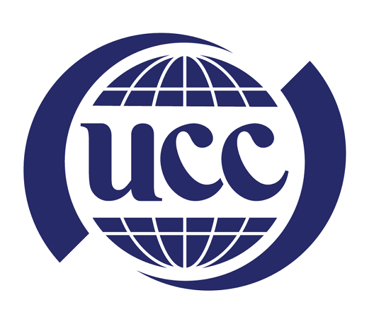
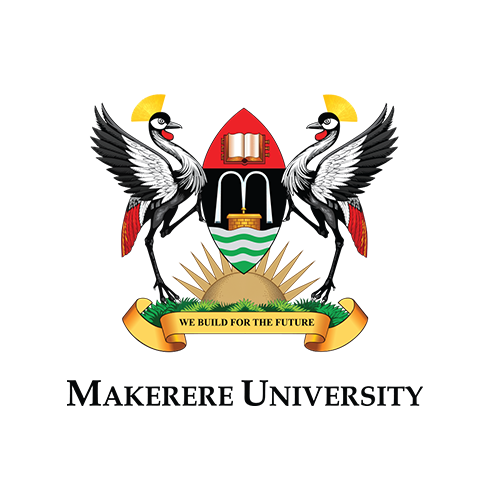

Our Partners
NCC 2026 is made possible through strategic collaboration across institutions driving Uganda’s digital transformation.



Conference Theme:
“Accelerating Market-Driven Innovation for Uganda's Development”
24th – 26th June, 2026
Experience the vision, impact, and opportunities of Uganda’s premier communications conference.
Over a decade of research, innovation, and collaboration for Uganda’s communications and digital transformation agenda.
The Uganda Communications Commission (UCC), in collaboration with Makerere University, is pleased to announce the 10th National Conference on Communications (NCC 2026). This milestone edition marks a decade of fostering research, innovation, and knowledge exchange within Uganda’s ICT ecosystem.
Since its inception in 2010, the NCC has evolved into Uganda’s premier platform for presenting peer-reviewed research, facilitating policy dialogue, and showcasing homegrown ICT solutions. The conference brings together academia, industry, government, and students to address the most pressing challenges and opportunities in Uganda’s communications sector.
The 2026 theme, “Accelerating Market-Driven Innovation for Uganda’s Development,” emphasizes the critical need to align research and innovation with market realities and national development priorities. This theme reflects Uganda’s commitment to leveraging ICTs as a catalyst for achieving the Uganda Vision 2040 and the objectives of the National Development Plan IV (NDP IV).
NCC 2026 brings together scholarly excellence, practical innovation, and meaningful engagement across academia, industry, and policy.
Present original research, case studies, and technical insights relevant to Uganda’s digital future.
Bridge academic work with market needs through partnerships, exhibitions, and collaborative dialogue.
Build capacity in scholarly writing, peer review navigation, and publication strategies.
Create opportunities for students to showcase ideas, interact with experts, and gain visibility.
Browse the key sections of the conference website for more information on submissions, activities, and partnerships.
View the conference tracks, submission guidelines, templates, review process, and important dates for paper submission.
View Call for PapersExplore the publishing masterclass series and the School ICT Clubs Innovation Competition taking place before the conference.
View ActivitiesLearn about sponsorships, exhibitions, partnerships, industry talks, and opportunities to connect research with real-world impact.
Explore IndustryNCC 2026 is made possible through strategic collaboration across institutions driving Uganda’s digital transformation.


Have questions about submissions, activities, partnerships, or participation?